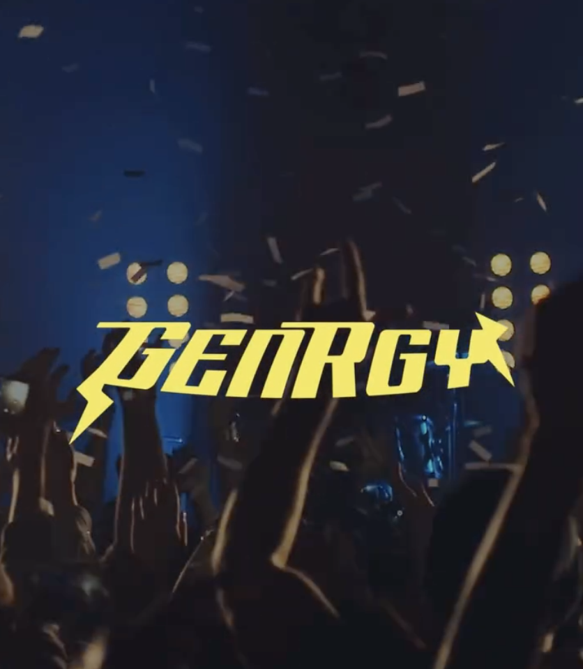

General Information
This branded website is publicly available at buas-media-interactive.github.io/my-website
This website was created by
- Lise Boonstra (235539)
- Denise Mulder (232145)
- Zoë Smits (235696)
- Tess Voetelink (231644)
- Isabelle Zuurveld (222063)
Content
Hier komt text
| # | Student ID | Value | Name and link of content |
|---|---|---|---|
| 1. | 235539 | Value | Content title |
| 2. | 232145 | ||
| 3. | 235696 | ||
| 4. | 231644 | ||
| 5. | 222063 |
Production
Design Elements
Please provide a list of design elements alongside their justifications:
-
A colour scheme (with HTML colour codes, which must be consistent with your final website)
— see the example below from the BUas brand book:
- #EE7622 The orange colour refers to the Dutch identity and the city of Breda (Oranjestad). Orange stands for…
- #00406B Dark blue signifies…
- Font choices
- User interface patterns (e.g. grids, carousels, menu organizations etc.)
- The structure of the navigation and content (e.g. how content units are distributed across pages)
- All these elements must be justified by referring to the theory and/or vocabulary of design
- Please relate these elements to other units, for example:
- How does website design fit the values and personality of the brand?
- How does website design fit the marketing and communication strategy?
- How does website design help showcase the unique value proposal of the product?
Credits
Please provide links and/or credits for third-party elements including:
- HTML templates if these are different from this one (buas-media-interactive/prj4-group-template)
- The source code for UX patterns other than the ones provided by the “Bootstrap” library (see getbootstrap.com/docs for a list of such patterns)
- Images that were not produced by students themselves, including when crediting is not mandatory (in other words, we ask you to credit Unsplash images)
Testing Report
Our primary goal during testing was to evaluate the usability, accessibility, and overall user experience (UX) of the Genrgy website. We aimed to understand how easily users could navigate the site, comprehend the content, and interact with its features. Specifically, we wanted to identify:
- How intuitive and effective the navigation is.
- Whether the messaging and content clearly communicate the purpose of Genrgy.
- How visually appealing and engaging the design is.
- Any technical or UX barriers preventing a smooth experience.
Ultimately, our goal was to ensure that the Genrgy website met the needs and expectations of its target audience.
We tested the Genrgy website with a group of 6 participants, specifically selected to reflect our core audience: Gen Z and Gen X users. This included a mix of university students, young professionals, and adults — all with varying levels of digital experience, from casual browsers to tech-savvy users. This gave us a great perspective on how both generations interact with the site.
Test SettingThe testing was conducted in hybrid format to fit the lifestyles of our audience:
- Remotely: Participants joined testing sessions from home, using their own devices (laptops and smartphones), reflecting real-life usage.
- On campus: A few sessions were held on campus, providing a controlled environment and allowing us to observe user behavior directly.
We made sure the site was tested on both desktop and mobile to reflect the multiple device habits of Gen Z and Gen X.
To keep things simple and stress-free, we gave participants a brief intro, then asked them to complete a few tasks on the site like:
- Figuring out what Genrgy is all about
- Navigating to info pages
- Navigating to about us
We encouraged a "think out loud" approach, so we could hear their thoughts as they explored. Each session lasted about 5-10 minutes and was either recorded (with permission) or observed in real time. We took notes on usability, pain points, and moments of delight to understand what worked — and what didn’t.
Positive aspects
- Simple and clean navigation
- The menu layout was described as intuitive and minimal, allowing users to move around the site easily
- Users appreciated the color scheme and modern aesthetic.
- The site worked well on phones. It looked good and was just as easy to use as the desktop version
Strong visual design
Mobile-friendly design
Negative aspects
- Not Enough Interaction
- People suggested adding more fun or interactive elements, maybe animations or something that makes the site feel more alive.
Marketing
Context of campaign
GenRgy is a brand inspired by the spirit and power of hard rock music, aiming to unite Gen X and Gen Z through a shared love of rock culture. The campaign is designed to built a community of rock-fans; young and old, and to promote a big collaboration. Together with Red Bull, we created an energy drink that's a conversation starter, a bridge between generations and a reason to come together.
The message of the GenRgy campaign is that rock music has the power to connect people across generations. By combining the energy of Red Bull with the rebellious spirit of hard rock, GenRgy encourages both Gen X and Gen Z to come together around a shared culture. Whether through music, style, or community, the campaign’s message is simple: the fire of rock still burns and it’s stronger when we experience it together.
To promote GenRgy and deliver this message, a series of integrated activities were executed on Instagram and Facebook: platforms chosen to reach both Gen Z (Instagram) and Gen X (Facebook). Promotional activities included:
- Posting fun and engaging reels celebrating hard rock culture
- Launching interactive polls and Q and As on Instagram Stories
- Encouraging user-generated content
- Directly engaging with fans, bands and influencers to build an authentic community
These activities were aligned with communication objectives focused on reach, emotional connection, and engagement, ensuring that both older and newer rock fans feel seen, energized and invited into the GenRgy world.
Objectives
Instagram and Facebook
1. Make GenRgy Known Among Hard Rock Fans
Reach Objective: By 11th of april 2025 we want a reach of 5,000 accounts on Instagram and Facebook.
2. Build an Engaged Hard Rock Community
Affect Objective: After seeing our posts on Facebook and Instagram we want people to feel excited, curious and in need of connection with different generations by the 11th of April 2025.
3. Drive Excitement with Band and Festival Collaborations
Response objective: Grow an active Instagram community by reaching 300 followers and generating 50+ interactions per post through comments, reactions, and story replies on Facebook and Instagram by 11th of april 2025.
Tactics
- Start joining Hard rock Facebook groups to introduce ourselves to the community.
- Post 3 times a week on Instagram and Facebook, to create and keep visibility.
- Encourage user-generated content by asking followers to share their rock-inspired moments
- Respond to every comment and DM to create real engagement and community.
Platforms and Content Strategy
Facebook and Instagram are the most appropriate platforms to introduce our brand as they allow the brand to access both Gen X and Gen Z, bridging the generational gap between old-school and new-school rock fans. Both generations consume rock music in different ways, and these platforms provide the right tools to access both naturally and in exciting ways.
Gen X grew up on rock as lifestyle, attending iconic shows, purchasing vinyl and idolizing bands. They're active on Facebook, where they post nostalgia-driven stuff, old school rock band fanfare and fan clubs dedicated to their preferred decades. By entering these communities, the brand is able to create a sense of closeness and belongingness, encouraging Gen X rock lovers to share their own rock experiences and acquainting them with another way to experience the energy of rock through the drink. Facebook is also where they engage with longer-form content, including in-depth posts about the history of rock, live Q&As with artists, or interactive surveys on new versus old rock (Kowalewicz, 2021).
At the same time, Gen Z has access to rock in energetic, fast-paced content, with a preference for Instagram as a platform where trends, aesthetics and fast-paced back-and-forth are the standard. They draw to Reels, visual branding, and influencer material, making Instagram the perfect spot to announce the energy drink as a rebellious, hip, and high-energy way of life product. Although they may not have lived through the era of rock, the majority of the Gen Z audience today is re-familiarizing themselves with classic rock on social media, pop culture, and fashion, making them open to a brand that brings two generations together under one cause. With Instagram Stories, the brand can maintain interaction with challenges, behind-the-scenes, and influencer collaborations, which create the rock culture fresh and personal to their lives. Through adopting Facebook to access Gen X's enduring passion for rock and Instagram to usher in Gen Z into a new iteration of rock energy, the brand has a chance to unite these two generations under one movement, to demonstrate that rock is immortal and so is the energy it creates (Thomas, 2023).
Target audience
Because our campaign is all about connecting generations, we have two brand personas': one is from generation Z and the other is from generation X.
Target audience 1 (Gen Z):
Platforms: TikTok, Instagram, YouTube, Snapchat
People from Generation Z (Gen Z) are also called digital natives. This is because they have grown up with smartphones, social media, and instant access to information. This generation prefers short, visual, and interactive content. Studies have shown that the average attention span of Gen Z’ers is only 8 seconds. Traditional marketing doesn't work on them: they have built resistance to ads and demand creative, rapid engagement.
Things Gen Z values include sustainability, inclusivity and brands that take a real stand on social issues. They are down-to-earth, financially cautious, and influenced more by relatable content creators than celebrities.
If a brand wants to win a Gen Z’ers loyalty, it must focus on transparency, storytelling, and a sense of purpose. To keep them engaged, it’s important for content to be personalized, quick and innovative (Fujii, 2024). You can find the full persona in the appendix.
Target audience 2 (Gen X):
Platforms: Facebook, 74% of Generation X use Facebook
Gen X hard rock fans are a loyal but often overlooked audience, with 74% actively using Facebook as their primary social media platform. This generation feels neglected by brands, often stating, “You’re not hitting us where we live.” To truly connect with them, brands must tap into nostalgia; reminding them of the music, culture, and experiences that shaped their youth. Authenticity is crucial; Gen X has a strong dislike for gimmicks or overly polished, corporate messaging that feels contrived or insincere. They prefer direct, honest communication that isn’t afraid to address real issues.
Like younger generations, Gen X values corporate social responsibility and cares about pressing issues such as economic stability, social justice and access to healthcare. Brands that take a stand on these topics will earn their trust and loyalty. Additionally, they appreciate bold, creative marketing - whether it’s live streaming a launch event, collaborating with influencers, or engaging with fans in real-time. As long as it’s authentic and true to the hard rock spirit, Gen X is here for it.
Their social media behaviour is characterized by a preference for straightforward, authentic content that resonates with their life experiences. Gen Xers value brands that respond promptly to customer inquiries, with 55% noting that such responsiveness enhances brand memorability.
They are also receptive to influencer marketing, particularly when it features creators from their own generation, leading to a 43% increase in website visits among this audience. (Sprout Social, 2025)
Campaign timeline
To ensure a consistent and effective campaign, the promotional activities will be rolled out in phases:
- Phase 1: Awareness (March 16 – March 23) - Launch the campaign with high-energy Reels introducing GenRgy’s brand story and mission. Start engaging with rock-related communities on Facebook and Instagram to build early buzz. Main Goal: Maximize reach and initial exposure.
- Phase 2: Community Building (March 24 – April 3) Introduce interactive content like polls, Q&As and user-generated content prompts. This is when we encourage followers to interact and share their rock moments. Main Goal: Build a two-way connection and start forming a loyal audience.
- Phase 3: Keep on community building and introduce product (April 4 – April 16) Our product is not the main focus, it's a tool to enhance the community-feeling we want to achieve. So when we have already built a community, in the last phase of our campaign, we will finally introduce our drink and talk more about our collaboration with Red Bull. We realise it's a short campaign and we will likely not have reached all our objectives yet, so during this last phase we will also keep on trying to build a community. Main Goal: Drive maximum interaction and bring awareness and excitement to our drink.
Content calendar
Content CalendarLearning Points
Identify and justify your learning point (based on the Communication and Media Plan). What did you learn during the duration of the project concerning the campaign? What worked and what didn’t? What went as expected and what didn’t? What would you do differently? Reflect on the past work and describe what you learned.
Future Planning
If this project were to continue, there would be various things we would change in our content strategy.
Firstly, a big change we would make is to stop posting on Facebook. As seen in our learning points, Facebook delivered zero to little results. We think it's not worth it to keep posting there. We do however still have to target two different target audiences: Generation Z and Generation X.
Even though research shows Gen X is most active on Facebook, recent trends indicate a growing presence of this generation on Instagram as well (Soax, 2025). Since our Facebook efforts haven't delivered the engagement we hoped for, it would be a logical shift to focus our energy on Instagram content instead. This allows us to reach both younger and older generations more effectively through one platform.
To ensure we target both younger and older generations on the same page, without alienating either group, we will use a consistent visual style but vary content themes to appeal to different generations. For instance, we could feature nostalgic content or classic rock references for Gen X, and newer bands, memes or trends for younger audiences, while keeping the overall aesthetic and tone consistent.
We also think it might make more sense to target both audiences on the same platform, because then they can connect with each other more easily. We noticed that by having both a Facebook and an Instagram page we still separate the two audiences, and it's hard to bring them together that way. A more strategic approach could also include following and engaging with both younger and older fan accounts, so we show up in relevant spaces for each group while keeping them part of the same community.
Another change we would make is to focus more on video-content. From our learning points we can conclude that Reels get way better results than normal text-based posts. Research supports this: apparently Instagram Reels see 36% more reach than other post types (Lang, 2024).
An important factor is that the Reels should not be too long. During the time of our campaign, we uploaded five reels. Three of which were short: under or around one minute. The other two were longer: around three minutes. The longer Reels got significantly less views. In the future we would keep our video's under 1,5 minutes.
Lastly, we would like to experiment with uploading times. We initially didn't realise that the time you post on could have a big impact on the way your content performs. After looking at research from Keutelian (2025) we found out the best times to post on Instagram are generally Mondays through Thursdays between 10 a.m. and 3 p.m. If this project were to continue, we would stick to those times.
Based on these future plans we wrote new communication objectives:
- Reach Objective: By May 13th, 2025, we want to reach a total of 7,000 accounts on Instagram (including the first 4 weeks of the campaign).
- Affect Objective: By May 13th, 2025, we want people that have seen our content to feel inspired and part of a shared rock culture, where different generations connect over music, identity, and nostalgia.
- Response Objective: Grow an active Instagram community by reaching 300 followers and generating 50+ interactions per post through comments, reactions, and story replies on Facebook and Instagram by May 13th, 2025.
Some of the objectives did not fully change, because we didn't achieve them in the last four weeks, but think it is realistic to achieve them over the next four weeks.
We made a draft content calendar for the next four weeks op posting:
Draft Content CalendarPromotional activities
-
This is just a generic introduction post. We reveal our logo, style and our main value: We’re here to reignite the fire of rock across generations. For interaction and community building, we ask the audience to comment their favourite rock songs.
-

We explain in the caption what people can expect from our social media accounts: community, interactive content, a meeting- place for all generations of hardrock fans and more about our collaboration with Red Bull.
-

This is an interaction-focused post. We ask the audience to share what their first and most recent rock concerts were. They can share by either commenting or posting a picture and tagging us.
-

Because we were still in the community building phase, we thought it would be fun to create a playlist with everyone's favourite songs. People could write songs in the comments and we would create a Spoitfy playlist featuring all of those.
-
A true or false game. We gave “facts” about bands and artists. The audience could play along and guess if the facts were actually true or completely made up.
-

A reel in which we walked around campus and asked people (from different generations) what their favourite rock songs are. We added all these songs to the GenRgy community-playlist.
-
In this post we announced our collaboration with Red Bull and gave more information about the energy drink we're creating together.
-
We ask the audience what their dream festival rock line-up would be.
-

A reel in which the whole team introduce themselves by stating their names and favourite rock bands.
-

Letting the audience know they can find us with our GenRgy stand at rock festivals. That's where we sell our drinks and create a space for the community to meet each other and connect.
-

In this post we tell you that GenRgy x Red Bull is a healthier alternative than most other energy drinks.
-

Part 1 of a Reel in which we play a “guess the song” game. In this game 2 contestants from different generations get to hear a few seconds of a famous rock song and have to guess the name and artist. Mark is the first contestant; this Reel shows him playing the game.
-

Part 2 of the “guess the song” game. In this part, Greta is playing the game.
-

In this post we ask people which rock concert they would attend, if they could choose anything (past or future).
Instagram Stories
-

Our brand values
-
Battle of Legends polls: audience has to choose between two rock artists/bands
-
Our other stories
-

Our other stories
-
Our other stories
-
-
-
Unique post for Facebook in which we announce KISS Army Storms Vegas 2025.
-
-
-
-
-
-
Unique post for Facebook to announce Bruce Springsteen is releasing 7 lost albums.
-
-
Management
Lean Canvas
Fill in at least 2 bullet points per building block and according to the rubrics.
Problem1. “Energy drinks are unhealthy and have too much sugar in it”
- The brand Body And Fit makes sugar free energy drinks with caffeine for athletes to make them feel energized, and focused.
- Sugar free versions of other energy drink brands
Our findings show that many people actually like energy drinks, but don't drink them (often) due to the fact that they usually aren't healthy. Especially the big amounts of sugar in it is a problem for many of the interviewees.
Existing alternatives2. “There's a gap between different generations of rock-fans"
Even though there is a huge amount of hard rock fans from both Gen X and Gen Z, there's still a gap between the two. Most people we interviewed stated that they find this disappointing and would like for the two to connect more.
Existing alternativesWe haven't found any existing alternatives. Of course, concerts and festivals usually aren't exclusively for the younger generation or for the older generations, but they still don't connect with each other there. This is a problem yet to solve.
3. “Merchandise is expensive”
- Bands and festivals sometimes give away merchandise for free, but the chance of winning is small
- Merch-sellers that don't own any rights of the pictures used sometimes sell them for cheaper. However, this is in most cases illegal.
Nowadays, you usually pay between $20 and $50 for one piece of merchandise (Faryad, 2024). Our interviewees all agreed that this is a lot. Most of them say they would probably buy merchandise more often if there were cheaper options.
Existing alternatives4. “Outsiders often associate rock with an angry, scary image”
- The brand Hot Topic also markets rock fans as expressive, emotional, and individualistic rather than scary or aggressive.
- Monster Energy: also collaborates with rock bands and artists
The people we interviewed said that there's a lot of inaccurate stereotypes around rock fans. People associate rock with an angry, scary image: lots of dark colours, aggression and mean people. This is often not the case; in fact, the interviewees said that the rock community is actually quite nice and inviting.
Existing alternatives1. Our solution to “Energy drinks are unhealthy and have too much sugar in it”
Creating an energy drink with less sugar and natural ingredients: The goal of our energy drink is that people can get a little more energy after a long day of standing and dancing at a festival. The only ingredient we need to reach that goal is to add caffeine, so we can create a healthier version by replacing or removing other ingredients like sugar.
2. Our solution to “There's a gap between different generations of rock-fans"
Building a platform where our goal is to bridge generations and create a community: Our solution to this problem is to post content on both Instagram and Facebook to built a community of hard rock fans. We target both the younger generations and the older generations, to eventually bring them all together on our community website. On our website people can connect with each other and see different events that we will visit. At these events we will create a space where connecting with others is the goal.
3. Our solution to “Merchandise is expensive”
Producing collectable cans in collaboration with bands and artists: We want to create limited edition GenRgy cans in collaboration with different bands and artists, these cans can be a cheaper collectable item as an alternative for the expensive merchandise most bands/artists sell.
4. Our solution to “Outsiders often associate rock with an angry, scary image”
Break the stereotypes of the hard rock community by showing a different image of the community people aren't used to: By talking and listening to hard rock fans we can create an image of what the hard rock scene is really like. We can spread this image on our different platforms, so this is also visible for the rest of the world.
Because our brand is all about connecting generations hard rock fans, we have two main target audiences': one is from generation Z and the other is from generation X. We focus on people that are extraverted and love meeting new people. They attend rock festivals/concerts and drink energy in both their daily lives as well as at said festivals or concerts. They currently feel a disconnect between the different generations of fans and yearn for a bigger sense of community.
GenRgy brings generations of rock fans together through shared passion, powerful design, and a spirit of rebellion. By celebrating rock's legacy while amplifying new voices, GenRgy fuels authentic connection, nostalgia and the pulse of what's next.
The first advantage we have that can be seen as unfair is our partnership with Red Bull. Red Bull is a very big and well-known brand. Us collaborating with them instantly gives us the benefit of a large audience. It also makes our brand more trustworthy because people already know Red Bull and its quality. Another advantage we have is that we collaborate with artists and events. This connects us directly with the rock community, allowing us to stay culturally relevant and build emotional connections with fans where they already are: at concerts, festivals and within the scene itself.
We use various ways to communicate to our customers. Firstly, we use Instagram and Facebook to build our community across generations, create engagement and inform people about any community-updates and about our products. We are also present at live events to both sell our energy drinks and for physical presence. Here we connect directly with the rock-fans and also create a space for them to connect among themselves. Lastly, we have a community website. On this website, fans can stay up to date with news. It acts as a central hub where the rock community and our brand come together.
“Website clicks”
This is an easy way to measure how big the engagement is on our website. The more clicks, the more people are visiting our website and therefore are interested in our brand.
“Sales of energy drink”
We are selling our drink at festivals and events, by measuring the sales of our drink we can not only see how popular our drink is but also how many people visit us at our stand and come in contact with our brand and what we stand for.
“Social media followers”
Followers on social media is a clear way to measure who visits our page and is interested in our brand, because people only start following when they are interested in the account.
Our biggest revenue stream comes from the sales of our energy drinks. In the first full year of our company, we expect to sell around 300,000 to 400,000 cans at an average retail price of €4 per can. This results in a total estimated revenue of €1.2 to €1.6 million for Red Bull from our co-branded product line.
We have a partnership agreement with Red Bull, under which GenRgy receives 25% of the revenue per unit sold. That means GenRgy would generate between €300,000 and €400,000 in revenue in year one.
This forecast is supported by our strong brand identity, cultural relevance, and community-focused marketing approach, combined with the credibility and reach of Red Bull.
Another revenue stream for GenRgy comes from sponsorships. Since we are present at festivals and concerts, where we sell our drinks and create a meeting space for rock fans, we offer brands a chance to be part of that experience. Sponsors can contribute to these live events in exchange for visibility at our stand, mentions on our social media, or being associated with limited-edition drink designs. If we collaborate with 3–4 sponsors in our first year, each paying around €3,000–€5,000, we estimate a sponsorship revenue of about €15,000.
Our total estimated revenue of the first year of our brand would come to a total of around €415,000.
- List your main costs: define the fixed and variable costs.
- Calculate the cost per unit.
“GenRgy x RedBull energy drink”
The product we are offering is an energy drink in collaboration with Red Bull. With this drink we are touring around the country visiting different festivals, to sell them there. With our energy drink we want to give people the extra energy they need during those long days but without the unhealthy ingredients and huge amount of sugar.
“Community focused Instagram platform and website”
Our website and Instagram platform form a service where people can go to find a community. On our platforms we want to create an environment where we encourage forming new connections between generations. So young and old can enjoy rock music together.
Validation of Assumptions
When looking at the different versions of our lean canvas, you can see that over time we adjusted our canvas a bit. We made the first version of the canvas all the way at the start of our assignment, so that one is mostly based on assumptions and expectations. The second version of the canvas was made after doing the problem interviews and the pitch. The third and final version of the canvas was made after the solution interviews.
After the pitch, we realised that an energy drink is not a unique product and we would have a lot of competition. Knowing that we're just a start-up, we couldn't expect our product to generate a lot of revenue. That's why we decided to collaborate with a big brand: Red Bull. By making it a partnership with Red Bull instead of launching our own product, we had to adjust a few things in our second lean canvas compared to the first one: the Unfair Advantage now focused on the Red Bull collaboration, the Product changed from our own drink to a co-branded one, and the Unique Value Proposition was updated to reflect the new bold, nostalgic identity.
Another change we made in our second lean canvas as a result of our pitch is that we started focusing less on the product itself and more on the community-feeling our brand wants to create. You can see this in our adjustments to the Channels, Customer Segments, and Solution blocks. We also decided to sell at events and festivals. This was not only to increase revenue but also to enhance that sense of community.
After conducting our solution interviews, we made several important changes to the third Lean Canvas to better reflect the needs and preferences of our target audience. In the problem section, we added more specific insights such as the unhealthy image of energy drinks, the generational divide among rock fans, and the stereotype of rock fans being aggressive. These were recurring points in interviews. For example, Anja and Fenne both mentioned avoiding energy drinks due to their high sugar content, while Yeara and Odille emphasized the importance of connecting different generations through shared musical tastes.
In the solution section, we added a focus on healthier ingredients, collectible cans tied to bands, and the idea of the drink as a festival memory or social experience, all based on strong enthusiasm for limited editions, design, and exclusivity (mentioned by nearly all participants, including Patrick, Celine, and Joop). Our unique value proposition was also refined to emphasize authentic community and cultural connection, which aligns with Odille’s point about feeling seen by a brand that represents the rock scene, and Yeara’s desire for something meaningful that brings generations together.
We also added energy drinkers as a new customer segment after learning that people like Odille and Celine would drink the product even outside of events, as long as the flavour and ingredients were appealing.
Finally, we updated our revenue stream to specify sales at events and online, based on widespread agreement—from Joop, Kevin, Luna, and others—that this is a product tied to live experiences, not daily routines.
Appendix
Please use the list below to provide links to evidence for all parts of your justification. Please double-check all links before delivering the website. Do not hesitate to refer to these numbers ab.